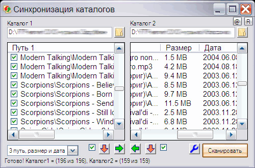

Synchronization
Назначение
Синхронизация файлов в двух папках.

Взаимосвязанные
Synchronization
Утилитка предназначена для проверки отличий в двух каталогах с возможностью обновить более старый каталог новым. Утилита была написана в связи с тем, что часто приходится обновлять сборник софта и других проектов. Аналогичные утилиты либо платные, либо требуется время на тест, дабы правильно интерпретировать автоматические операции, либо нет каких либо удобных фич.
1. После старта указываем каталоги (поддерживается перетягивание каталогов с проводника) и жмём "Сканировать", тем самым получаем списки файлов первого и второго каталога.
2. Раскрывающийся список определяет, что считать различием, по умолчанию путь. К примеру, если выбрать "3 путь, размер и дата", то в обоих списках могут появится файлы с одинаковыми относительными путями, но разными датами или размером. Даже со всеми одинаковыми параметрами файлы могут оказаться разными, то есть необходимо вычислять MD5, но как правило это редкий случай, и вычислять MD5 требует много времени. Поэтому MD5 пока не используется и скорее всего не будет использоваться.
3. Как правильно обновлять каталог правого окна: после сканирования нажимаем кнопку удаления правого окна, дабы удалить файлы, которых нет в левом окне. И далее копируем файлы левого окна в правое, кнопкой в виде зелёной стрелки вправо. Аналогично можно обновить левой окно, нажав удаление в левом окне и кнопку копирования влево.
4. Галочки позволяют выбирать, что копировать, также можно снять все галочки (одним кликом) и выбрать некоторые файлы. И как вариант - просто перетащить пункт левого окна в правое или наоборот, при этом также будет выполнено копирование перетягиваемого файла.
5. Контекстное меню списка файлов позволяет запустить файл в ассоциированной программе. А также перейти к файлу в проводнике.
6. В настройках можно указать параметры поиска: маска, подкаталоги, метод исключения указанных в маске. Например полезно если вы хотите обновить только exe-файлы или фильмы.
7. Текущая версия не содержит полосу прогресса копирования, но информирует в строке состояния о текущем прогрессе.